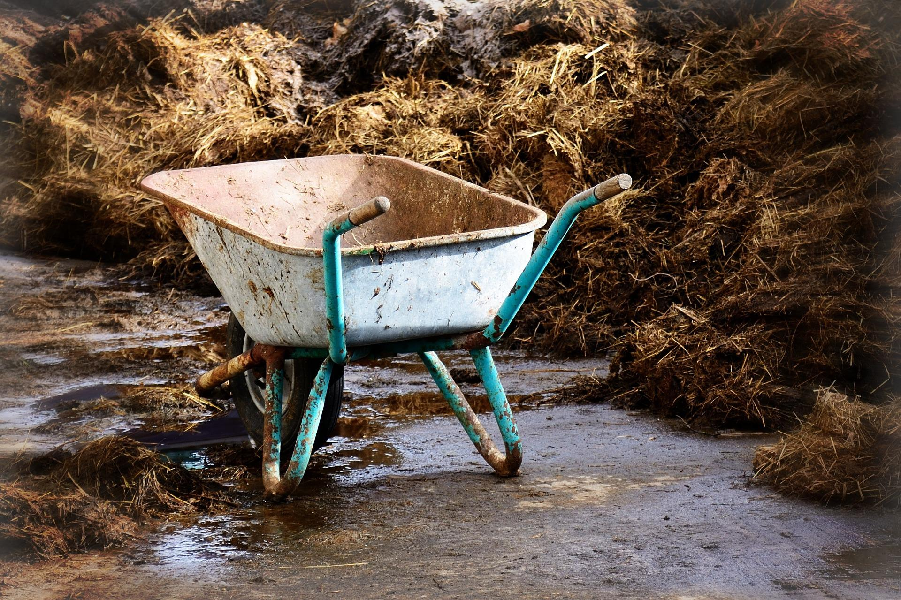
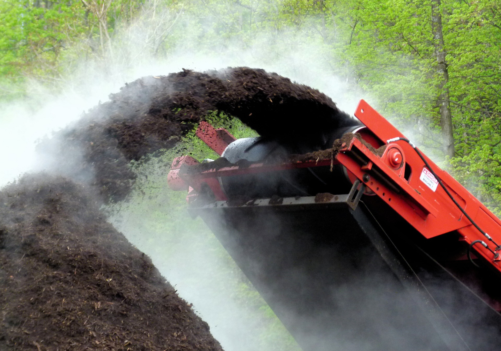
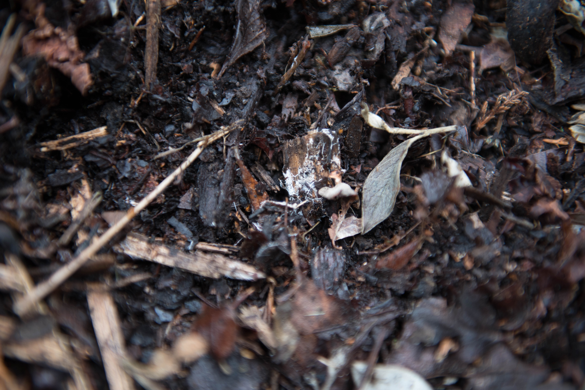
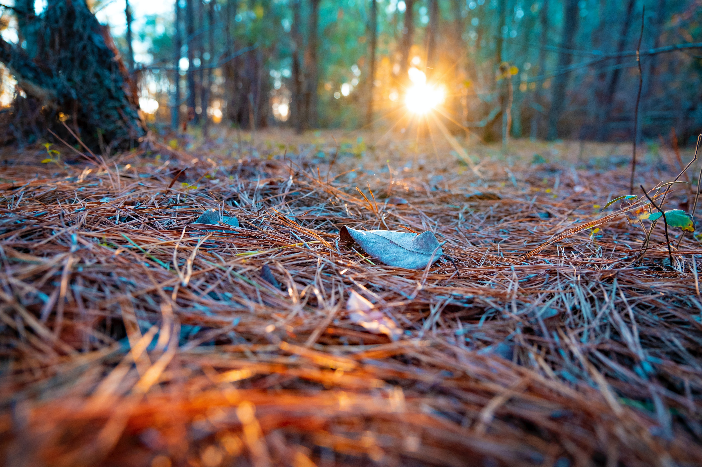

9 eco-friendly and sustainable alternatives to peat compost
Until recently peat has been a main component of many garden composts. Peat is formed of partially decomposed vegetation with the type formed from sphagnum moss being particually prized in horticulture due to its open structure and water retaining properties. Peat bogs and fens form a unique wetland ecosystem which takes many thousands of years to form and provides habitat for a diverse range of plants, insects and birds. Peatland is also the earth's largest carbon store (storing 42% of all soil carbon) and harvesting it releases this carbon dioxide back into the atmosphere.
Due to its impact on the environment, sales of peat-based composts are due to be banned in the UK by 2024.
Here are 9 sustainable alternatives to peat you can use in your garden to help preserve this precious habitat and cut your carbon footprint.
1. Farmyard Manure
A traditional material used to maintain and improve soil fertility and structure. It consists of straw or other bedding material, mixed with well rotted animal faeces and urine. A full range of nutrients is released into the soil.

2. Garden (home) Compost
Making your own compost has a host of benefits including; recycling garden and kitchen waste without needing transport.

3. Composted Municipal Waste
Essentially the same as garden compost, but as it normally composts at a much higher temperature weeds and diseases have been killed off. It can, however, have issues with plastic and glass contamination.

4. Spent Mushroom Compost
A by-product of the mushroom industry. It is typically straw capped with chalk, which gives a characteristically high pH. This makes it useful for increasing soil pH as an alternative to liming but it must not be used for acid loving plants (ericaceous).

5. Leaf Mould
Leaf mould is made from well rotted leaves of decidous trees and makes a highly prized low nutrient compost.

6. Pine Needles
An extremely acidic medium that is almost resistant to decomposition. Highly valued for the propagation of calcifuge plants such as rhododendrons and heathers.

7. Chipped Bark
Primarily used a decorative surface mulch. It does not decompose readily which means it can last a long time on the surface.

8. Green Manures
This is the practice of growing plants to:
- cover bare ground
- out compete weeds
- reduce soil erosion
- capture soluble nutrients
- add organic matter
- increase micro-organism activity
- develop and maintain soil fertility and structure
The plants used are typically agricultural crops such as clover or trefoil that cover the ground quickly. The seeds are sown in autumn when there are no overwintering plants. The green manure is then dug in or cut, left to wilt and dug into the soil.

9. Coconut Coir
Coconut coir is made from the fibers between the shell and outer covering of coconuts. It has excellent water-retention capabilities, holding up to 10 times its weight in water. Adding it to soil also aids in proper draining and aeration, allowing plant roots to get plenty of water and room for oxygen. Coir can be used in a potting compost and strawberries are grown in it.